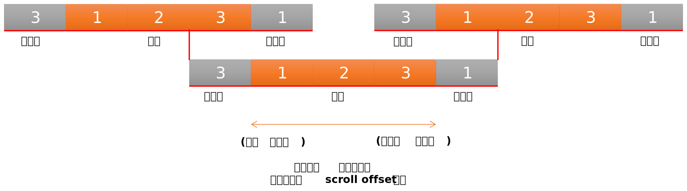

본 프로젝트는 크로스플랫폼(PC 및 모바일) 기반의 리니지 라이크(Lineage-like) 스타일 대규모 MMORPG로,
C++과 Unreal Engine 5를 활용해 높은 그래픽 품질과 최적의 성능을 구현했습니다. World Partition System, AI Pathfinding / Navigation System, Gameplay Ability System(GAS), Nanite 등 다양한 기술이 적용되었고,
UI 개발에는 MVVM(Model-View-ViewModel) 아키텍처를 도입해 코드의 재사용성과 유지보수성을 높였습니다.
나의 주요 기여
저는 전투 시스템, 콘텐츠 구현, UI/UX, 아키텍처 설계 및 최적화 등 여러 영역에 참여하여 게임의 완성도 향상에 기여했으며,
현재 출시 미정인 비공개 프로젝트라 주요 내용은 텍스트 중심으로 구성했습니다.
State Machine 패턴 적용으로 전투 프로세스 구조 재편 및 안정성 강화
자동 전투 시스템 직접 개발로 편의성 및 몰입도 향상
콤보 스킬, 퀵슬롯, 스캔 시스템 구현으로 전투 핵심 기능 고도화
MVVM 구조·공통 UI 컴포넌트 도입으로 코드 재사용 및 생산성 향상
AI 스크립트 자동 생성 도구로 서버 패킷·데이터 작업 시간 50% 단축
콘텐츠 스케줄 관리 시스템 구축으로 운영 안정성 확보
메모리 누수·댕글링 포인터 버그 수정으로 안정성·성능 대폭 개선
미니맵 이벤트 기반 업데이트 전환으로 불필요 연산 제거
월드맵·필드맵·미니맵 UI 개발로 시각 퀄리티 및 UX 개선
레이드 던전 콘텐츠 구조 모듈화로 재사용성 극대화
결투·업적·시즌패스·우편·소환 상점 등 방대한 콘텐츠 개발
전투 시스템 설계 및 개선
프로젝트 R의 전투 시스템은 상태 머신(State Machine)을 기반으로 설계되어, 복잡한 전투 상황에서도 명확하고 안정적으로 동작합니다.
플레이어의 조작, 자동 전투, 스킬 사용 등 다양한 요소를 유기적으로 결합해 역동적인 전투를 가능하도록 했습니다.
전투 프로세스 구조 개선
문제점: 여러 조건 분기(if/else)가 중첩된 복잡한 구조로 인해 새로운 기능을 추가하거나 수정할 때 전투 로직이 꼬이는 문제가 자주 발생했습니다.
해결: 상태 머신(State Machine) 패턴을 도입하여 전투 프로세스를 명확한 상태(대기, 공격, 피격 등)로 나누고, 각 상태의 전환 조건을 명확히 정의하여 재편했습니다. 이를 통해 각 상태는 자신의 로직에만 집중할 수 있게 되어 코드의 복잡도가 크게 낮아졌습니다.
결과: 버그가 감소하고 코드의 가독성과 유지보수성이 향상되었습니다.
1. 상태 머신 기반의 공격 처리
전투 과정을 '추적', '회전', '공격 대기', '공격 중' 등 명확한 상태로 분리하고, 상태 전환 조건을 정의해 로직 복잡도를 낮췄습니다.
UAttackProcessor는 매 프레임마다 현재 상태를 평가하고 변화 시 적절한 처리로 일관성을 보장합니다.
// EAttackState: 전투 상태를 정의하는 열거형
enum class EAttackState : uint8
{
None, // 없음
TrackingTarget, // 대상 추적
RotatingToFaceTarget, // 대상을 향해 회전
AttackWaiting, // 공격 대기
AttackingTarget // 대상 공격 중
};
// 상태 평가/전환을 일관되게 처리
void UAttackProcessor::ProcessAttack()
{
// ...
const EAttackState NewState = EvaluateAttackState();
if (CurrentState != NewState)
{
HandleStateChange(NewState);
}
switch (CurrentAttackState)
{
case EAttackState::TrackingTarget:
{
HandleTrackTarget();
break;
}
case EAttackState::RotatingToFaceTarget:
case EAttackState::AttackWaiting:
{
HandleRotateToFaceTarget();
break;
}
case EAttackState::AttackingTarget:
{
HandleExecuteAttack();
break;
}
}
}
2. 스킬 실행 흐름
플레이어의 스킬 사용은 APlayerControllerBase의 PerformAttack 함수를 통해 처리됩니다. 이 함수는 스킬 사용의 유효성을 검사하고, 대상(타겟)을 결정하며, 최종적으로 서버에 스킬 사용 요청을 전송합니다. 이 과정에서 클라이언트와 서버 간의 긴밀한 통신을 통해 스킬의 정확성과 안정성을 보장합니다.
GetInputUseSkillNo()와 ResetInputSlot() 함수를 통해 현재 입력된 스킬 번호를 관리하고 초기화하며,
IsPossibleUseSkill() 함수는 무기 교체 상태, 탑승 상태, 캐릭터 제약 등 다양한 조건을 확인하여 스킬 사용 가능 여부를 판단합니다.
또한, HandleSkillUse() 함수는 스킬 사용 요청을 처리하고, OnPlayerSkillHit() 함수는 스킬이 대상에게 적중했을 때의 로직을 처리합니다.
// PlayerControllerBase_Skill.cpp
void APlayerControllerBase::PerformAttack()
{
// 공격 수행을 위해 전처리 과정이 완료되어야 합니다.
if (false == PrepareUseSkill())
{
return;
}
int32 UseSkillNo = 0;
uint8 AttackIndex = 0;
// 스킬 사용 입력이 있을 경우 해당 스킬을, 그렇지 않을 경우 기본 공격 스킬 번호를 설정.
if (IsNotBasicAttackInput())
{
UseSkillNo = SkillInputProcessor->GetInputSkillNumber();
AttackIndex = 0;
}
else
{
UseSkillNo = PlayerCharacter->GetBasicSkillNo();
AttackIndex = PlayerCharacter->GetSkillController()->GetNextBasicAttackIndex();
}
int64 TargetIndex{};
FVector TargetLocation = FVector::ZeroVector;
// 이동기 확인 및 유효성 검사. 대상 유효성은 ValidateTacticalMobilitySkill 함수에서 처리하고 있음.
if (USkillUtility::IsTacticalMobilitySkill(this, UseSkillNo) && false == AttackProcessor->ValidateTacticalMobilitySkill(UseSkillNo, TargetLocation))
{
ResetInputSlot();
return;
}
// 기본대상은 공격 대상. 사용 스킬이 자신에게 사용하는 스킬 여부를 판단해 인덱스 변경.
TargetIndex = USkillUtility::IsNoTargetSkill(this, UseSkillNo) ? PlayerCharacter->GetUID() : GetAttackTarget()->GetUID();
// 타깃이 자신이 아닐경우 유효성 검사.
if ((GetAttackTarget() && TargetIndex == GetAttackTarget()->GetUID()) && false == AttackProcessor->ValidateSelectedAttackTarget())
{
ResetInputSlot();
return;
}
if (UNetSystem* NetSystem = UNetSystem::NetSystem(this))
{
// 스킬 사용 전송.
StopPlayerMovement(false);
NetSystem->CMSG_USE_SKILL(UseSkillNo, PlayerCharacter->GetUID(), PlayerCharacter->GetCharacterLocation(), TargetIndex, TargetLocation, AttackIndex);
}
EnableSendPerformAttack();
}
자동 전투 시스템 개발
문제점: 반복적인 수동 조작으로 인한 사용자의 피로도가 높았습니다.
해결: 사용자의 개입을 최소화하는 자동 전투 로직을 직접 설계하고 구현했습니다.
결과: 사용자 편의성과 게임 몰입도가 크게 향상되었습니다.
1. 자동 전투 시스템
UAutoCombatProcessor는 자동 전투를 전담하는 컴포넌트입니다. 단순히 가장 가까운 적을 공격하는 것을 넘어, 매너 모드, 자동 반격 등 다양한 옵션을 제공하여 플레이어의 전략적 선택을 지원합니다.
또한, 퀘스트 추적 모드와 연동되어 자동으로 퀘스트 목표를 찾아 이동하고 전투를 수행합니다.
TickComponent를 통해 지속적으로 유효한 공격 대상을 탐색하고, 플레이어의 이동 상태를 확인하여 자동으로 공격을 시작하거나 중지합니다.
// 자동 전투의 핵심 로직
void UAutoCombatProcessor::TickComponent(...)
{
// ...
// 현재 타겟이 유효한지 검사
if (!PlayerController->GetAttackProcessor()->ValidateSelectedAttackTarget())
{
// 유효하지 않다면 새로운 공격 대상 탐색
if (!PlayerController->GetActionTargetManagement()->RefreshValidAttackTargets())
{
// 공격 대상이 없으면 공격 중지
PlayerController->GetAttackProcessor()->StopAttack();
return;
}
}
// 이동 중이 아니고, 공격 중이 아니라면 새로운 공격 시작
if (!bFalling && PlayerController && !PlayerController->IsMoving())
{
if (!PlayerController->GetAttackProcessor()->IsAttacking())
{
PlayerController->GetAttackProcessor()->StartAttack();
}
}
}
2. 커스터마이징 가능한 자동 스킬 시스템
UAutoSkillComponent를 통해 플레이어는 자동 전투 시 사용할 스킬의 순서와 조건을 설정할 수 있습니다.
단순 반복은 물론, 특정 조건에서만 발동하는 콤보 스킬 설정도 가능합니다. 시스템은 스킬 사용 가능 여부(쿨타임, 비용 등)를 실시간으로 체크하여 최적의 스킬을 선택합니다.
특히, 플레이어의 MP 변화나 스킬 쿨타임 완료 이벤트에 반응하여 사용 가능한 스킬을 동적으로 재평가하고, 필요에 따라 자동 스킬 사용을 재시도합니다.
// 사용 가능한 스킬을 탐색하는 로직
int32 UAutoSkillComponent::GetAvailableSkillNo()
{
// ...
// 설정된 스킬 슬롯 순회
for (uint8 i = 0; i < CycleLength; i++)
{
// ...
const int32 SkillNo = GetAutoSkillNo(CalcAutoSkillSlotIndex);
// 스킬 사용 조건(습득 여부, 쿨타임, 비용 등) 확인
if (CheckSkillConditions(SkillNo))
{
return SkillNo; // 사용 가능한 스킬 번호 반환
}
}
return DefaultSkillNo; // 사용 가능한 스킬이 없으면 기본 공격
}
// 스킬 사용 조건을 확인하는 함수
bool UAutoSkillComponent::CheckSkillConditions(uint16 SkillNo) const
{
// 스킬 습득 여부, 쿨타임, 비용 등을 확인
// ...
return IsLearnedSkill && IsSatisfyCoolTime && IsSatisfyCost;
}
// 스킬 사용 후 처리 (성공/실패)
void UAutoSkillComponent::OnNotifySkillUsed(int32 SkillNo, uint16 Error)
{
// ...
if (0 != Error)
{
ProcessAutoSkillUseError(SkillNo, Error); // 에러 처리
}
else
{
OnSkillUsed(SkillNo); // 스킬 사용 성공 처리
}
// ...
}
개발 효율성 및 아키텍처 개선
프로젝트 R의 UI는 MVVM (Model-View-ViewModel) 아키텍처를 기반으로 설계되어, 데이터와 UI 표현을 명확하게 분리하고 유지보수성을 극대화했습니다.
MVVM 아키텍처 개선
문제점: 여러 조건 분기(if/else)가 중첩된 복잡한 구조로 인해 새로운 기능을 추가하거나 수정할 때 전투 로직이 꼬이는 문제가 자주 발생했습니다.
해결: 상태 머신(State Machine) 패턴을 도입하여 전투 프로세스를 명확한 상태(대기, 공격, 피격 등)로 나누고, 각 상태의 진입/진출 조건을 명확히 정의하여 재편했습니다. 이를 통해 각 상태는 자신의 로직에만 집중할 수 있게 되어 코드의 복잡도가 크게 낮아졌습니다.
결과: 버그가 감소하고 코드의 가독성과 유지보수성이 향상되었습니다.
1. MVVM 아키텍처 기반의 데이터 바인딩 UI
UI의 모든 요소(플레이어 HP, 스킬 쿨타임, 재화 등)는 ViewModel의 데이터와 바인딩되어, 데이터 변경 시 UI가 자동으로 업데이트됩니다.
이를 통해 UI 갱신 코드를 직접 작성하는 대신, 데이터 관리 로직에만 집중할 수 있어 개발 생산성과 코드 안정성이 크게 향상되었습니다.
예를 들어, UFieldMapViewModel은 필드맵의 상태와 데이터를 관리하며, 위젯은 이 뷰모델의 데이터를 구독하여 화면을 갱신합니다.
또한, PlacementSectorIcon, PlacementNPCIcon, PlacementLocationMemoryIcon 함수를 통해 지도에 섹터, NPC, 기억 위치 아이콘을 동적으로 배치하며,
UpdateSectorInfo 함수를 통해 선택된 섹터의 유형(일반, 보스, 포털, 침공)에 따라 정보를 업데이트하여 사용자에게 풍부한 시각적 정보를 제공합니다.
// FieldMapViewModel.cpp
void UFieldMapViewModel::SetFieldMap(const FName& MapID)
{
// ...
UE_MVVM_SET_PROPERTY_VALUE(CurMapID, MapID);
UE_MVVM_SET_PROPERTY_VALUE(CurResoursePathMapImage, MapImageResourcePath);
UpdateMapInfo(MapID);
UpdateMapReward(MapID);
// ...
}
// UW_FieldMap.cpp (Widget)
// In the widget's blueprint, properties are bound to the ViewModel's properties.
// For example, a TextBlock's text is bound to the 'CurMapName' property of the ViewModel.
// When 'CurMapName' changes in the ViewModel, the TextBlock is automatically updated.
// 섹터 아이콘 배치
void UFieldMapViewModel::PlacementSectorIcon(const FName& FieldMapID, const FFieldMapSectorInfo& FieldMapSectorInfo)
{
// ...
}
// 섹터 정보 업데이트
void UFieldMapViewModel::UpdateSectorInfo(const FName& MapID, const FName& SectorID)
{
// ...
switch (CurSelectedSectorType)
{
case ESectorType::Normal: UpdateNormalSectorInfo(FieldMapSectorInfo); break;
case ESectorType::Boss: UpdateBossInfo(FieldMapSectorInfo); break;
case ESectorType::Portal: UpdatePortalInfo(FieldMapSectorInfo); break;
case ESectorType::Invasion: UpdateInvasionInfo(FieldMapSectorInfo); break;
}
}
2. 맵 상호작용 시스템 (Map Interaction System)
UMapInteractionViewModel은 맵의 확대/축소(Zoom) 및 이동(Pan)과 같은 상호작용을 관리하는 핵심 컴포넌트입니다.
이 뷰모델은 FMapZoomSettings와 FMapMovementSettings 구조체를 통해 줌 레벨, 이동 속도, 경계 클램핑 등 다양한 설정을 유연하게 적용할 수 있도록 설계되었습니다.
사용자의 입력(마우스 휠, 드래그 등)에 따라 맵의 스케일과 위치를 부드럽게 보간하여 직관적이고 반응성 높은 맵 탐색 경험을 제공합니다.
특히, UpdateZoomInterpolated()와 UpdateTranslationInterpolated() 함수를 통해 맵의 확대/축소 및 이동 애니메이션을 처리하며, RecalculateClampBounds() 함수로 맵이 화면 밖으로 벗어나지 않도록 경계를 자동으로 조절합니다.
문제점: 여러 조건 분기(if/else)가 중첩된 복잡한 구조로 인해 새로운 기능을 추가하거나 수정할 때 전투 로직이 꼬이는 문제가 자주 발생했습니다.
해결: 상태 머신(State Machine) 패턴을 도입하여 전투 프로세스를 명확한 상태(대기, 공격, 피격 등)로 나누고, 각 상태의 진입/진출 조건을 명확히 정의하여 재편했습니다. 이를 통해 각 상태는 자신의 로직에만 집중할 수 있게 되어 코드의 복잡도가 크게 낮아졌습니다.
결과: 버그가 감소하고 코드의 가독성과 유지보수성이 향상되었습니다.
1. 순환형 퀵슬롯 (Looping Quick Slot)

순환형 퀵슬롯(LoopListView) 동작 다이어그램
한정된 화면 공간에 많은 스킬을 배치하기 위해, 좌우로 무한히 순환하는 퀵슬롯을 구현했습니다.
이는 일반적인 리스트뷰 위젯을 커스터마이징한 ULoopListView를 통해 구현되었습니다. 리스트의 시작과 끝에 아이템을 복제하여 추가하고, 스크롤 위치에 따라 선택된 아이템을 동기화하여 끊김 없는 순환 효과를 만들어냈습니다.
특히, OnListViewScrolledInternal() 함수는 스크롤 위치를 감지하여 리스트의 시작과 끝에 아이템을 동적으로 추가/제거함으로써 무한 스크롤을 구현합니다.
2. 이벤트 기반의 최적화된 맵 시스템 (Event-Driven Map System)
플레이어의 원활한 게임 플레이를 돕기 위해 세 가지 종류의 맵(월드맵, 필드맵, 미니맵)을 개발했습니다.
각 맵의 상태와 상호작용은 MapInteractionViewModel을 통해 공통으로 관리되며, 각 맵의 특성에 맞는 뷰모델(WorldMapViewModel, FieldMapViewModel, MiniMapViewModel)이 이를 확장하여 사용합니다.
특히 수많은 오브젝트가 표시되어야 하는 미니맵의 경우, EMiniMapIconType과 같은 열거형을 사용하여 다양한 종류의 아이콘(몬스터, NPC, 플레이어 등)을 효율적으로 관리하며,
FMiniMapUpdateLocationUIDListData 구조체를 활용한 이벤트 기반 업데이트 방식을 도입하여 매 프레임 모든 아이콘을 업데이트하는 대신, 위치가 변경된 아이콘만 업데이트하여 성능을 최적화했습니다.
또한, OnAddMiniMapObject() 및 OnRemoveMiniMapObject() 함수를 통해 미니맵에 표시되는 객체를 동적으로 추가/제거하며,
퀘스트 진행 상황(OnUpdateQuestOrMissionStatus()), 파티 상태(OnSetPlayerParty()), 커뮤니티 관계(AddCommunityData(), RemoveCommunityData()),
그리고 캐릭터의 수배 상태(OnChangedCharacterWanted())에 따라 아이콘의 상태를 실시간으로 업데이트하여 플레이어에게 필요한 정보를 즉각적으로 제공합니다.
사용자는 OnClickedMapRotationLock()을 통해 맵 회전을 고정하거나 해제할 수 있으며, OnClickedMapExpand()를 통해 미니맵의 확장/축소 상태를 전환할 수 있습니다.
UUW_MiniMapObjectIcon은 미니맵에 표시되는 개별 아이콘의 시각적 표현을 담당하는 UMG 위젯입니다.
이 위젯은 Init() 및 SetIcon() 함수를 통해 아이콘의 스케일, 회전, 리소스(이미지)를 초기화하고,
UpdatePosition() 및 UpdateIcon() 함수를 통해 아이콘의 위치를 갱신하고 유형 또는 상태에 따라 시각적 표현을 변경합니다.
또한, ApplyIconDetail() 함수를 사용하여 아이콘의 크기 및 회전과 같은 세부 정보를 적용하며,
Clear() 함수를 통해 아이콘의 상태를 초기화하여 오브젝트 풀링(Object Pooling)을 통한 효율적인 재활용을 가능하게 합니다.
UUW_FieldMapInputHandlingWidget는 UInputHandlingWidget을 상속받아 필드맵에 특화된 입력 처리를 담당하는 UMG 위젯입니다.
이 위젯은 사용자의 마우스 드래그(HandleInputMoved_Implementation())나 휠 이벤트(HandleInputGestureOrWheelEvent_Implementation())를 감지하여 UFieldMapViewModel의 DragMap(), ZoomByDelta(), ZoomToValue() 함수를 호출함으로써 맵의 이동 및 확대/축소를 제어합니다.
또한, 입력 상태(눌림/떼어짐)를 FieldMapViewModel에 전달(OnChangedIsInputPressed())하고, 마우스 클릭 시 맵 좌표를 계산하여 OnClickedFieldMapCoordinate()를 호출하는 등 뷰모델과의 긴밀한 상호작용을 통해 사용자 입력을 처리합니다.
특히, 맵 아이콘들이 줌 레벨에 관계없이 일정한 크기를 유지하도록 RestoreMapIconScale() 함수를 통해 스케일을 보정합니다.
Tick마다 모든 아이콘의 위치를 계산하고 업데이트하여, 아이콘 수가 많아질수록 불필요한 연산이 증가했습니다.
개선 방식
객체의 이동 이벤트가 발생할 때만 해당 아이콘의 위치를 업데이트하도록 변경하여 연산량을 대폭 줄였습니다.
결과: CPU 부하 감소 및 프레임 안정화
메모리 관리 개선
문제점: 장시간 플레이 시 프레임이 저하되고 크래시가 발생하는 문제가 있었습니다.
원인: 특정 UI가 닫힐 때 하위 위젯들이 메모리에서 해제되지 않는 누수와 댕글링 포인터 문제를 발견했습니다.
해결: Unreal Insights와 같은 프로파일링 툴을 사용해 메모리 누수 지점을 추적하고, 순환 참조를 방지하기 위해 약한 포인터(TWeakObjectPtr)를 사용하고, 불필요한 참조는 명시적으로 해제하는 등 생명 주기 관리를 강화하여 문제를 해결했습니다.
결과: 메모리 사용량 안정화 및 크래시 문제 해결
UI 재사용성 향상
MVVM 아키텍처를 도입하고 공통 UI 컴포넌트를 설계하여 코드의 재사용성과 생산성을 높였습니다. 이를 통해 개발 속도가 향상되고 유지보수가 용이해졌습니다.
문제해결
AI를 활용한 반복 작업 자동화
서버 패킷 연결, 테이블 구조 생성 등 반복적인 작업을 AI 스크립트 자동 생성 도구를 통해 자동화했습니다. 이를 통해 개발 시간을 50% 단축하고, 수작업으로 인한 오류 발생률을 크게 줄였습니다.
성장
Unreal Engine 5 기반 대규모 프로젝트 경험
대규모 다중 사용자 환경(MMO)에서 실시간 렌더링, 크로스플랫폼(PC/모바일) 대응 등 고난도의 기술 과제를 해결하며 언리얼 엔진에 대한 깊은 이해를 갖추게 되었습니다. 특히 MVVM 아키텍처, 오브젝트 풀링, 이벤트 기반 시스템 등 복잡한 시스템을 설계하고 구현하는 과정에서 언리얼 엔진의 다양한 기능을 심도 있게 활용하는 역량을 키웠습니다.
협업을 통한 시스템 설계 및 개선 역량 강화
팀원들과 긴밀하게 협력하며 레이드 시스템, 보스 스케줄 등 복잡한 콘텐츠의 구조를 설계했습니다. 특히 UAttackProcessor의 상태 머신 패턴 도입, UAutoCombatProcessor 및 UAutoSkillComponent의 지능형 로직 구현 등 모듈화되고 재사용 가능한 구조로 시스템을 개선하며 팀 전체의 개발 생산성 향상에 기여했습니다. 이 과정에서 요구사항 분석, 설계 논의, 코드 리뷰를 통해 협업 능력을 크게 향상시켰습니다.
디버깅 및 성능 개선 역량 강화
미니맵 최적화 과정에서 발생한 불필요한 연산 제거, 메모리 누수 및 댕글링 포인터와 같은 찾아내기 어려운 버그들을 Unreal Insights와 같은 전문 프로파일링 툴을 활용하여 해결하며 실전 디버깅 역량을 키웠습니다. 또한, 오브젝트 풀링 및 효율적인 리소스 관리(TSoftObjectPtr)를 통해 안정적인 게임 플레이 환경을 제공하는 성능 최적화 능력을 갖추게 되었습니다.